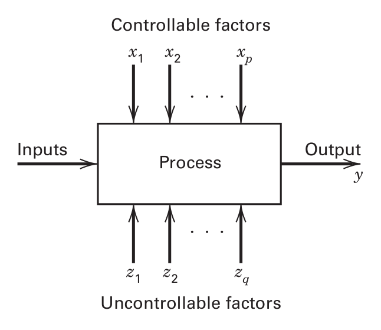
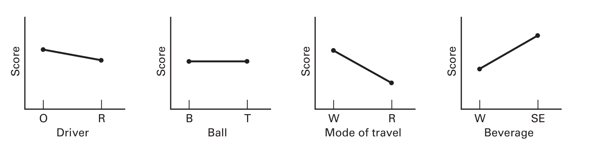
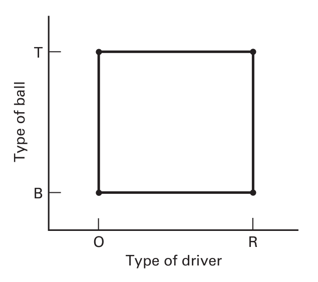
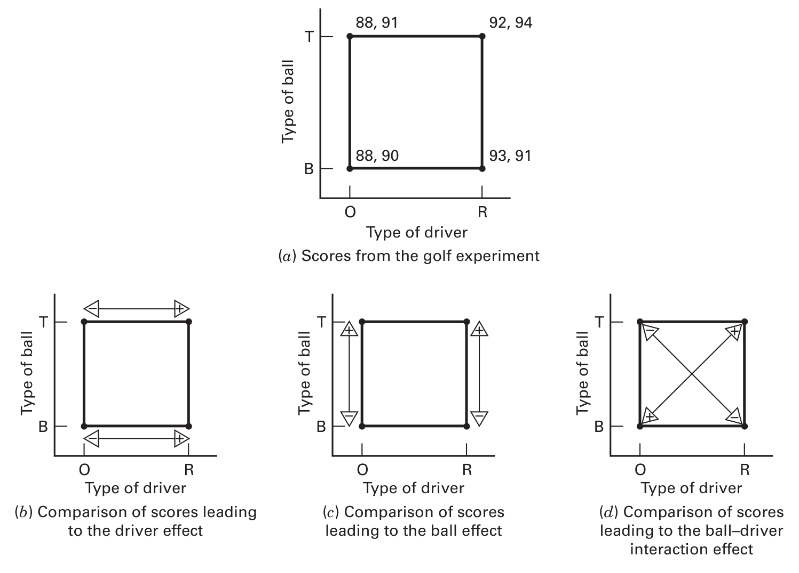
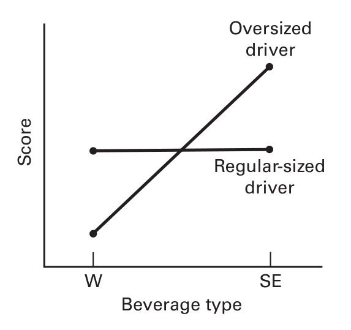
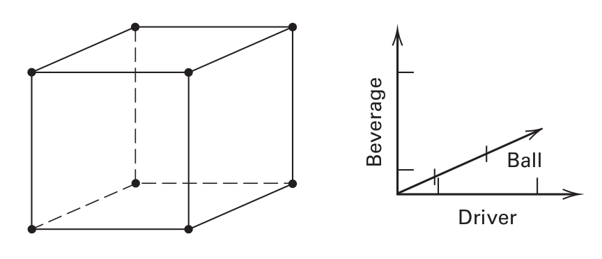
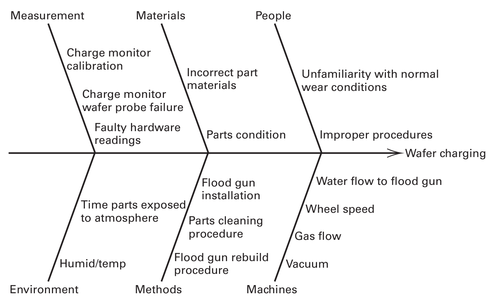
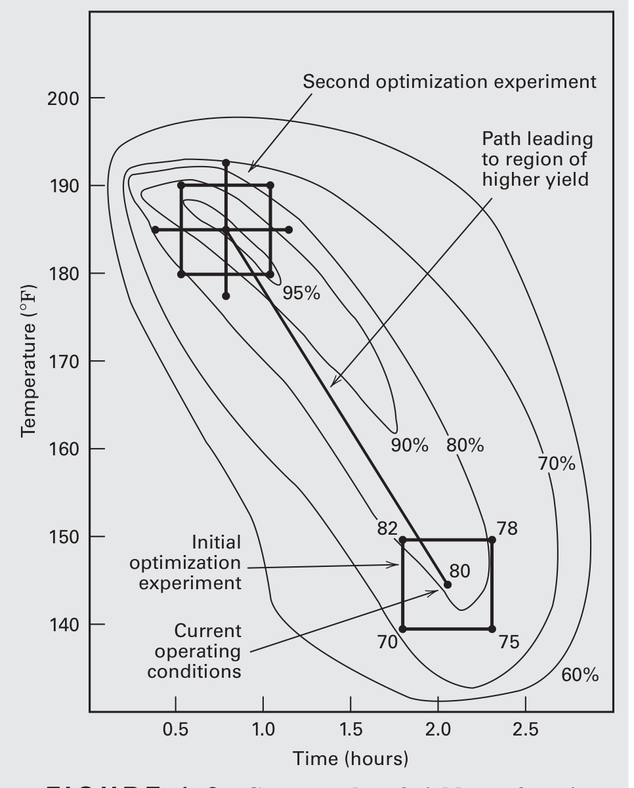

Percurso · Montgomery, 9ª ed. · Capítulo 1 · págs. 1–22
Por que se experimenta, o que é um fator, e por que mudar uma variável de cada vez é um erro caro.
Vamos começar pelo ponto que separa a estatística experimental de quase todo o resto da estatística aplicada. Montgomery abre o livro citando Yogi Berra: "dá para observar muita coisa só olhando". E em seguida diz que isso não basta.
A diferença é esta. Quando você observa um processo, você registra os valores que as variáveis assumiram por conta própria. Quando você experimenta, você impõe os valores. Essa distinção parece trivial e não é: ela é exatamente o que separa correlação de causalidade.
Um experimento (experiment) é um teste, ou uma série de execuções (runs), em que se fazem mudanças propositais nas variáveis de entrada de um processo, de modo a observar e identificar as razões das mudanças observadas na resposta de saída.
Repare em cada pedaço dessa definição: mudanças propositais (não é o processo que varia sozinho — é você que mexe), nas variáveis de entrada (você escolhe quais), para identificar as razões (o objetivo é causal, não descritivo).
Por que a intervenção resolve o problema causal? Porque quando você decide qual unidade experimental recebe qual tratamento — e decide por sorteio —, o valor do tratamento deixa de ser determinado por qualquer característica da unidade. Numa base observacional, se pacientes mais graves recebem o remédio novo, a comparação entre grupos mistura efeito do remédio com efeito da gravidade, e não há como separar. Isso tem nome, e o nome vai reaparecer o curso inteiro:
Dois efeitos estão confundidos (confounded) quando o delineamento não permite estimá-los separadamente: qualquer diferença observada pode ser atribuída a um ou a outro, e os dados não decidem.
Montgomery dá o exemplo do engenheiro metalúrgico que compara têmpera em óleo com têmpera em salmoura. Se ele usar corpos de prova de uma corrida de fundição (heat) no óleo e de outra corrida na salmoura, a diferença média de dureza pode ser do meio de têmpera ou da diferença entre as corridas. O experimento foi mal planejado, e nenhuma análise estatística posterior conserta isso. É a lição-mãe da disciplina: a forma como os dados foram coletados determina o que se pode concluir deles.
Há uma segunda razão para experimentar, mais silenciosa. Alguns fenômenos são bem entendidos o suficiente para serem descritos por um modelo mecanístico (mechanistic model), deduzido da teoria física — a lei de Ohm, , é o exemplo. Mas a maioria dos problemas reais em engenharia, biologia e negócios não tem essa teoria disponível. Nesses casos, constrói-se um modelo empírico (empirical model): uma equação ajustada aos dados de um experimento planejado. O livro inteiro é, em boa parte, um manual de como obter modelos empíricos confiáveis com o menor número possível de execuções.
Antes de planejar qualquer coisa, é preciso desenhar o sistema. Montgomery propõe um esquema que vai servir para todo experimento do livro.

Os elementos são:
Com esse esquema, os objetivos possíveis de um experimento ficam nítidos. Note que são quatro objetivos diferentes, e o delineamento adequado muda conforme o que se quer:
Os objetivos 3 e 4 costumam passar despercebidos por quem aprendeu só ANOVA de médias. Um processo pode ter a média perfeita e ser inútil por ter variância alta. Boa parte do valor industrial do DOE está em reduzir dispersão — e isso exige delineamentos e análises diferentes das que comparam médias.
Montgomery introduz as estratégias com um exemplo deliberadamente banal — o próprio escore de golfe dele — porque a lógica fica visível sem que a física do problema atrapalhe. Os fatores em estudo são quatro, cada um com dois níveis:
| Fator | Nível − | Nível + |
|---|---|---|
| Tipo de taco (driver) | superdimensionado (O) | tamanho normal (R) |
| Tipo de bola | balata (B) | três peças (T) |
| Modo de deslocamento | caminhando (W) | de carrinho (R) |
| Bebida | água (W) | "outra coisa" (SE) |
O orçamento é fixo e apertado: oito rodadas de golfe. Guarde esse número — a comparação entre as estratégias só faz sentido a custo constante.
Escolhe-se uma combinação plausível, testa-se, olha-se o resultado e chuta-se a próxima combinação com base no que se viu. É de longe o mais usado na prática, e não é irracional: quem trabalha num processo há dez anos tem conhecimento técnico real, e esse conhecimento vale muito.
Tem dois defeitos, e vale a pena entender por que são estruturais:
A estratégia OFAT (one-factor-at-a-time) é a que parece científica. Fixa-se uma linha de base para todos os fatores; varia-se um fator por vez, mantendo os demais na linha de base; ao final, monta-se um gráfico por fator.

A leitura é direta: a inclinação negativa em "modo de deslocamento" sugere que andar de carrinho melhora o escore; o tipo de bola parece irrelevante. Concluiríamos: taco normal, de carrinho, bebendo água.
O problema é que essa conclusão pode estar simplesmente errada — e o próximo tópico mostra por quê.
OFAT é uma projeção unidimensional de uma superfície multidimensional, feita a partir de um único ponto. Ela só descreve o comportamento do sistema ao longo dos eixos que passam pela linha de base. Se a superfície tiver curvatura cruzada — isto é, se o efeito de um fator depender do nível do outro —, essas projeções não contêm a informação necessária, por mais dados que você colete ao longo delas.
A alternativa correta é o experimento fatorial (factorial experiment): variam-se os fatores em conjunto, testando todas as combinações de níveis, em vez de um por vez.

Com oito rodadas disponíveis e quatro combinações, jogamos duas rodadas em cada canto — dizemos que o delineamento foi replicado duas vezes. Os escores obtidos:

O efeito principal (main effect) de um fator é a variação média da resposta ao passar do nível baixo para o nível alto daquele fator, tomando a média sobre todos os níveis dos demais fatores.
Para o taco: média dos quatro escores do lado direito do quadrado (taco R) menos a média dos quatro do lado esquerdo (taco O):
Interpretação: trocar o taco superdimensionado pelo normal piora o escore em 3,25 tacadas por rodada, em média. (No golfe, escore alto é ruim.)
Para a bola: média dos quatro escores de cima menos a média dos quatro de baixo:
O efeito de interação é a média das diagonais de um sentido menos a média das diagonais do outro:
Conclusão: o efeito do taco (3,25) é muito maior que o da bola (0,75) e que a interação (0,25). Um teste estatístico formal — que aprenderemos no capítulo 6 — mostraria que só o efeito do taco difere de zero. Recomendação prática: jogar sempre com o taco superdimensionado.
Foram oito observações. E as oito foram usadas para calcular o efeito do taco, as oito para o efeito da bola e as oito para a interação. Nenhuma outra estratégia de experimentação usa os dados com essa eficiência. É por isso que fatoriais dão estimativas mais precisas com o mesmo orçamento — o que se chama de projeção oculta (hidden replication): cada observação trabalha para vários efeitos ao mesmo tempo.
Vale reproduzir isso no computador desde já — não porque as contas sejam difíceis, mas para começar a criar o hábito de codificar o delineamento como uma tabela de níveis.
# --- Experimento de golfe 2^2, duas réplicas (Montgomery, Fig. 1.5) ---
# Codificação padrão: -1 = nível baixo, +1 = nível alto
golfe <- data.frame(
taco = c(-1, +1, -1, +1, -1, +1, -1, +1), # O = -1, R = +1
bola = c(-1, -1, +1, +1, -1, -1, +1, +1), # B = -1, T = +1
score = c(88, 93, 88, 92, 90, 91, 91, 94)
)
# Efeito principal = média(nível alto) - média(nível baixo)
efeito <- function(x, y) mean(y[x == +1]) - mean(y[x == -1])
efeito(golfe$taco, golfe$score) # efeito do taco
## [1] 3.25
efeito(golfe$bola, golfe$score) # efeito da bola
## [1] 0.75
efeito(golfe$taco * golfe$bola, golfe$score) # interação: produto das colunas
## [1] 0.25
A coluna da interação é o produto elemento a elemento das colunas dos dois fatores. Esse fato — que a interação é uma coluna de contraste como qualquer outra, obtida por multiplicação — é a chave algébrica de todo o capítulo 6 e de toda a teoria de fatoriais fracionários do capítulo 8. Vale internalizar agora.
E o mesmo resultado sai de uma regressão linear, o que antecipa a ponte entre DOE e regressão (capítulo 10):
m <- lm(score ~ taco * bola, data = golfe)
coef(m) * 2 # coeficientes × 2 = efeitos, na codificação ±1
## (Intercept) taco bola taco:bola
## 181.75 3.25 0.75 0.25
O fator 2 aparece porque, com níveis codificados em , o coeficiente da regressão mede a variação por uma unidade de , enquanto o "efeito" percorre duas unidades (de a ). Essa relação volta no capítulo 6.
Há interação (interaction) entre dois fatores quando o efeito de um deles sobre a resposta não é o mesmo nos diferentes níveis do outro.
Se você guardar uma única ideia do capítulo 1, guarde esta. A figura abaixo mostra uma interação forte entre tipo de taco e bebida:

Agora repare no que isso faz com a estratégia OFAT. Se a linha de base fosse "taco normal", você variaria a bebida, veria a reta horizontal e concluiria: bebida não importa. A conclusão estaria errada — bebida importa muito, mas só numa das configurações do outro fator. E nenhum aumento no número de rodadas ao longo daquela reta horizontal revelaria o problema, porque a informação necessária simplesmente não está ali.
Interações são comuns em sistemas reais, não excepcionais. Quando ocorrem, o OFAT produz conclusões erradas — não apenas imprecisas, erradas. E é frequente ouvir que OFAT é "o método científico" ou "boa prática de engenharia". Não é. Como Montgomery diz sem meias palavras: experimentos OFAT são sempre menos eficientes do que os métodos baseados em delineamento estatístico.
Uma consequência prática que você vai usar a vida toda: quando há interação significativa entre dois fatores, não faz sentido interpretar os efeitos principais isoladamente. Dizer "o efeito da temperatura é +5" é vazio se esse efeito é +12 com o catalisador A e −2 com o catalisador B. A resposta correta à pergunta "qual o efeito da temperatura?" passa a ser "depende — e aqui está de quê". Isso reaparece formalmente no capítulo 5.
A ideia do fatorial se estende naturalmente. Com três fatores em dois níveis, as oito combinações são os vértices de um cubo — o delineamento :

Em geral, com fatores em dois níveis, o fatorial completo exige execuções. E aí está o problema:
| Fatores | 2 | 3 | 4 | 5 | 7 | 10 |
|---|---|---|---|---|---|---|
| Execuções | 4 | 8 | 16 | 32 | 128 | 1024 |
Com dez fatores seriam 1024 rodadas de golfe. Inviável — e o caso de dez fatores é rotineiro na indústria.
A saída é a observação, nada óbvia, de que na presença de muitos fatores quase nunca é necessário executar todas as combinações. Um fatorial fracionário (fractional factorial) usa um subconjunto cuidadosamente escolhido das execuções. Para os quatro fatores do golfe, metade das 16 combinações — 8 execuções — dá boa informação sobre os quatro efeitos principais e alguma informação sobre as interações. Exatamente o orçamento disponível.
Por que isso funciona, e qual o preço a pagar, são as perguntas dos capítulos 8 e 9. O preço tem nome — estrutura de alias — e antecipando: alguns efeitos ficam confundidos entre si, e o trabalho do estatístico é escolher quais, de modo que os confundimentos caiam sobre efeitos que a experiência diz serem desprezíveis.
Montgomery cita o exemplo do desenho de uma página web com 7 componentes, com 4, 8, 6, 5, 4, 3 e 7 opções cada: páginas possíveis. Nenhuma empresa testa 80 mil páginas. Testa-se um fracionário com fatores de níveis mistos. Isso é, literalmente, o que empresas de comércio eletrônico fazem hoje — e é o capítulo 9.
Aqui está o núcleo conceitual do capítulo. Fisher os formulou nos anos 1920, e eles não mudaram desde então: aleatorização, replicação e blocagem. Alguns autores acrescentam o princípio fatorial como quarto.
Aleatorizar é determinar por sorteio tanto a alocação do material experimental aos tratamentos quanto a ordem em que as execuções são realizadas.
São duas coisas — alocação e ordem — e as duas importam. A aleatorização faz dois trabalhos distintos:
Trabalho 1 — validar a teoria. Os métodos estatísticos que vamos usar exigem que os erros sejam variáveis aleatórias independentes. A aleatorização é o que torna essa suposição defensável. Sem ela, você está aplicando uma teoria cujas premissas não valem, e os valores-P que sair não significam o que dizem significar.
Trabalho 2 — diluir o que você não controlou. Suponha que os corpos de prova do experimento de dureza tenham espessuras ligeiramente diferentes, e que a espessura afete a eficácia da têmpera. Se todos os espécimes grossos forem parar no óleo, há viés sistemático: o resultado favorece um tratamento por um motivo que não é o tratamento. Sortear a alocação distribui as espessuras entre os grupos e transforma um viés sistemático em ruído aleatório — que a estatística sabe tratar.
Programas de DOE já apresentam as execuções em ordem aleatória, e é fácil achar que a aleatorização foi feita. Não foi: falta você sortear a atribuição das unidades experimentais concretas — quais corpos de prova, quais operadores, quais instrumentos — a cada execução. Essa parte nenhum software faz por você.
Há também situações em que aleatorizar plenamente é caro: uma variável difícil de mudar (hard-to-change), como a temperatura de um forno, não pode ser alterada a cada execução. Existem delineamentos próprios para isso — parcelas subdivididas, capítulo 14. O que não se pode é abandonar a aleatorização e analisar como se ela tivesse sido feita.
# Aleatorizar a ordem de 10 execuções: 5 no tratamento A, 5 no B
set.seed(2026)
tratamentos <- rep(c("oleo", "salmoura"), each = 5)
ordem <- sample(length(tratamentos)) # permutação aleatória
plano <- data.frame(
execucao = seq_along(ordem),
espécime = ordem,
tratamento = tratamentos[ordem]
)
plano
## execucao espécime tratamento
## 1 1 3 oleo
## 2 2 8 salmoura
## 3 3 4 oleo
## ... (a sua saída difere se mudar a semente)
Replicar é repetir, de forma independente, a execução de cada combinação de fatores.
A palavra que carrega o peso é independente. Voltaremos a ela em um minuto.
A replicação faz duas coisas:
(a) Dá uma estimativa do erro experimental. Se você executa a mesma condição duas vezes e obtém resultados diferentes, essa diferença mede a variabilidade intrínseca do processo. Sem isso, você não tem régua: não há como julgar se uma diferença entre tratamentos é grande ou pequena. É por isso que sem replicação não existe teste de hipótese — não há denominador.
(b) Aumenta a precisão das médias. Se é a variância de uma observação individual e há réplicas, a variância da média amostral é
Repare no formato: a variância cai com , mas o desvio-padrão cai com . Para dobrar a precisão, é preciso quadruplicar o esforço. Esse retorno decrescente é o motivo pelo qual, no capítulo 2, veremos que amostras de tamanho 10 a 12 já são quase tão boas quanto amostras muito maiores para muitos propósitos.
Um bolacha de silício (wafer) é atacada quimicamente uma vez, e uma dimensão crítica é medida três vezes. Essas três medidas não são réplicas: são medidas repetidas (repeated measurements). A variabilidade entre elas reflete o erro do instrumento, não o erro do processo.
Mesma coisa com quatro bolachas processadas simultaneamente no mesmo forno: as quatro medidas refletem diferenças entre bolachas dentro daquela batelada, não a variabilidade entre bateladas.
Por que importa: usar medidas repetidas como se fossem réplicas subestima o erro experimental. O denominador do seu teste F fica pequeno demais, e você declara significativos efeitos que não são. É um erro que aparece em artigos publicados — e é o tipo de coisa que um estatístico bem formado detecta em cinco segundos e um analista mal formado nunca vê.
Há ainda uma sutileza operacional. Considere estas três execuções consecutivas, já em ordem aleatorizada:
| Execução | Pressão (psi) | Temperatura (°C) | Tempo (min) |
|---|---|---|---|
| 30 | 100 | 30 | |
| 30 | 125 | 45 | |
| 40 | 125 | 45 |
Entre e a pressão não muda; entre e não mudam nem temperatura nem tempo. Para obter réplicas de verdade, o experimentador precisa "girar o botão" da pressão para um valor intermediário e trazê-lo de volta a 30 psi. Parece pedantismo, mas não é: parte do erro experimental é justamente a variabilidade de acertar e sustentar um nível de fator. Se você não remexe o botão, essa fonte de variação some do seu erro estimado — e você volta ao mesmo problema de subestimar o denominador.
Um bloco é um conjunto de condições experimentais relativamente homogêneas. Blocar é agrupar as execuções em blocos, de modo que as comparações de interesse sejam feitas dentro de cada bloco.
A blocagem existe para lidar com fatores de perturbação (nuisance factors): variáveis que afetam a resposta mas cujo efeito não interessa. Lotes de matéria-prima, dias, operadores, equipamentos.
O raciocínio: se um experimento exige duas bateladas de matéria-prima e há variação entre fornecedores, a diferença entre bateladas vai contaminar as comparações entre tratamentos. Fazendo de cada batelada um bloco, e garantindo que todos os tratamentos apareçam dentro de cada bloco, a diferença entre bateladas atinge todos os tratamentos igualmente e sai da comparação.
Compare a lógica dos três princípios — vale organizar assim na cabeça:
| Princípio | Problema que ataca | Como |
|---|---|---|
| Aleatorização | Fatores de perturbação desconhecidos ou não mensuráveis | Converte viés sistemático em ruído aleatório |
| Replicação | Não se sabe quanto é ruído | Fornece a estimativa do erro experimental |
| Blocagem | Fatores de perturbação conhecidos e controláveis | Remove a variação entre blocos da comparação |
Blocar o que se pode, aleatorizar o que não se pode. Se você conhece a fonte de perturbação e consegue agrupá-la, bloque — é mais eficiente. Se não conhece ou não consegue, aleatorize — é a proteção contra o desconhecido.
O exemplo mais simples de blocagem — a comparação pareada — aparece já na seção 2.5, e lá veremos numericamente que blocar reduz o desvio-padrão relevante quase pela metade.
Montgomery organiza a condução de um experimento em sete passos. Os três primeiros formam o planejamento pré-experimental (pre-experimental planning) e são onde se ganha ou se perde o experimento.
| # | Etapa | Fase |
|---|---|---|
| 1 | Reconhecimento e enunciado do problema | Planejamento pré-experimental |
| 2 | Escolha da variável respostaa | |
| 3 | Escolha dos fatores, níveis e faixasa | |
| 4 | Escolha do delineamento experimental | Execução e análise |
| 5 | Realização do experimento | |
| 6 | Análise estatística dos dados | |
| 7 | Conclusões e recomendações |
a Na prática, os passos 2 e 3 são frequentemente feitos simultaneamente ou na ordem inversa.
Parece óbvio e não é. Raramente é simples perceber que existe um problema que pede experimentação, e menos ainda formular um enunciado que todos os envolvidos aceitem. Por isso Montgomery insiste no trabalho em equipe: engenharia, qualidade, produção, marketing, gerência, cliente — e especialmente os operadores, que costumam ter muita informação e ser sistematicamente ignorados.
Ajuda muito classificar o tipo de objetivo, porque cada tipo gera perguntas diferentes:
A resposta precisa de fato carregar informação sobre o processo. Normalmente é a média ou o desvio-padrão da característica medida — ou ambos. Um ponto que os estatísticos frequentemente esquecem: a capacidade do sistema de medição. Se o instrumento é ruim, só efeitos grandes serão detectados, e será preciso mais replicação para compensar. Vale definir antes do experimento como cada resposta será medida e como o instrumento será calibrado e mantido.
Esta é a etapa com mais vocabulário, e vale memorizar a taxonomia, porque ela guia decisões práticas o tempo todo:
| Categoria | Subcategoria | O que é | Como se trata |
|---|---|---|---|
| Fatores de projeto potenciais | Fatores de projeto | Os efetivamente escolhidos para estudo | Variam no experimento |
| Mantidos constantes | Podem afetar a resposta, mas não interessam agora | Fixados num nível | |
| Deixados variar | Variação entre unidades experimentais | Diluídos por aleatorização | |
| Fatores de perturbação | Controláveis | Lote, dia, operador | Blocagem |
| Não controláveis, mas mensuráveis | Umidade ambiente | Análise de covariância (cap. 15) | |
| Fatores de ruído | Variam na operação, controláveis no teste | Projeto robusto (cap. 12) |
Uma ferramenta muito útil para organizar tudo isso é o diagrama de causa e efeito (cause-and-effect diagram), também chamado diagrama espinha-de-peixe ou de Ishikawa:

Note como o diagrama se conecta com a tabela acima: algumas causas viram fatores de projeto (velocidade da roda, fluxo de gás, vácuo), outras precisam de estudo antes de virar fator (procedimentos incorretos), e outras vão ser mantidas constantes ou blocadas (temperatura e umidade).
Quanto às faixas e níveis, duas regras práticas:
4. Escolha do delineamento. Se as etapas 1–3 foram bem feitas, esta é fácil. Envolve tamanho amostral, ordem das execuções e restrições de aleatorização. Envolve também escolher um modelo tentativo — veja a seção seguinte.
5. Realização. É preciso monitorar. O erro mais comum que Montgomery relata em anos de consultoria: as pessoas que conduzem o experimento simplesmente não ajustam as variáveis nos níveis certos em algumas execuções. Alguém deve conferir cada ajuste antes de cada execução. Execuções-piloto ajudam: dão ideia da consistência do material, checam o sistema de medição, dão uma noção grosseira do erro experimental e permitem rever as decisões de 1 a 4.
6. Análise. Se o delineamento está correto, os métodos necessários não são elaborados. Métodos gráficos simples têm papel enorme. E há um limite que precisa ficar claro:
Métodos estatísticos não provam que um fator tem determinado efeito. Eles medem a confiabilidade e a validade dos resultados — permitem quantificar o erro provável de uma conclusão, ou anexar um nível de confiança a uma afirmação. A vantagem principal é acrescentar objetividade à decisão. Estatística sem conhecimento do processo e sem bom senso não conclui nada de útil.
7. Conclusões e recomendações. Métodos gráficos são valiosos para comunicar. E execuções de confirmação devem ser feitas para validar as conclusões.
Escolher o delineamento envolve escolher, provisoriamente, um modelo. Na maioria dos casos um polinômio de baixa ordem serve. O modelo de primeira ordem em duas variáveis:
onde os são parâmetros desconhecidos a estimar e é o termo de erro aleatório, que absorve o erro experimental. Este é o modelo de efeitos principais (main effects model), muito usado em triagem.
Como interações são comuns, a extensão natural acrescenta o termo cruzado:
Repare: o produto é exatamente a coluna que multiplicamos no código R da seção 4.3. A interação é um termo de produto no modelo — nada mais misterioso que isso.
E o modelo de segunda ordem, usado em otimização:
Os termos quadráticos permitem curvatura — logo, permitem que o modelo tenha um máximo ou um mínimo interno. É por isso que só com segunda ordem se pode otimizar. Esse modelo é o coração da metodologia de superfície de resposta:

Observe a estrutura desta figura, porque ela resume a filosofia do livro: experimenta-se em sequência. Um fatorial pequeno indica a direção; caminha-se; outro experimento pequeno refina. Nunca um experimento gigante.
Não é decoração. Saber de onde vem cada família de métodos ajuda a entender por que elas têm a forma que têm.
Montgomery fecha o capítulo com quatro recomendações. Elas parecem genéricas na primeira leitura e ficam mais afiadas com o tempo.
1. Use seu conhecimento não estatístico do problema. Escolher fatores, definir níveis, decidir quantas réplicas rodar, interpretar os resultados — tudo isso depende de conhecimento do domínio. Um delineamento estatístico não substitui pensar sobre o problema.
2. Mantenha o delineamento e a análise tão simples quanto possível. Não exagere na sofisticação. Se o planejamento pré-experimental for bem feito, a análise sai quase sozinha — "um experimento bem planejado às vezes praticamente se analisa sozinho". E o contrário também é verdade: se você estragou o planejamento, nenhuma estatística elegante salva.
3. Distinga significância estatística de significância prática. Um engenheiro pode determinar que uma modificação no sistema de injeção melhora o consumo em 0,1 mi/gal, e que esse resultado é estatisticamente significativo. Se a modificação custa US$ 1000, o resultado é irrelevante. Esse conselho fica ainda mais importante com amostras grandes, onde diferenças minúsculas viram "significativas" — voltaremos a isso no exercício 2.53 do próximo capítulo.
4. Experimentos são iterativos. Não se deve planejar um experimento grande e abrangente no início de um estudo, porque no início não se sabe quais fatores importam, em que faixas, com quantos níveis. Aprende-se ao longo do caminho.
Como regra geral, não invista mais de 25% dos recursos disponíveis no primeiro experimento. O resto fica para as etapas seguintes e para os testes de confirmação. Um primeiro experimento é, quase sempre, uma experiência de aprendizado.
E uma última frase, que vale como síntese do capítulo: todos os experimentos são delineados. A pergunta não é se há delineamento, e sim se ele é bom ou ruim.
Tente responder antes de abrir. Se errar, volte à seção correspondente — errar aqui é o objetivo, é assim que se fixa.
Na observação, os níveis das variáveis são determinados pelo próprio sistema, o que permite que uma característica da unidade influencie ao mesmo tempo o "tratamento" recebido e a resposta — os dois efeitos ficam confundidos e nenhuma análise os separa. Ao experimentar, o pesquisador impõe os níveis, tipicamente por sorteio; o nível deixa de depender de qualquer característica da unidade, e a diferença observada passa a ser atribuível ao tratamento.
Há interação quando o efeito de um fator sobre a resposta não é o mesmo nos diferentes níveis de outro fator (retas não paralelas num gráfico de interação).
O OFAT varia um fator mantendo os demais fixos numa linha de base. Ele mede, portanto, o efeito de cada fator apenas naquela combinação dos outros. Se há interação, esse efeito não se generaliza — e o experimento não contém nenhuma informação sobre o quanto ele varia. Aumentar o número de observações não resolve: a informação não está nos eixos que o OFAT percorre.
Média das duas diagonais de um sentido menos média das diagonais do outro. Com os dados da figura 1.5:
Equivalentemente: crie a coluna de sinais como produto das colunas dos dois fatores e aplique a mesma fórmula "média dos + menos média dos −".
Todas as observações são usadas no cálculo de todos os efeitos. No exemplo do golfe, as mesmas oito rodadas fornecem o efeito do taco, o efeito da bola e a interação — cada uma com quatro observações de cada lado da comparação. É a replicação oculta: cada execução trabalha simultaneamente para vários efeitos.
Réplica é uma execução independente da combinação de fatores: o processo é rodado outra vez, do começo, com os botões reajustados. Medida repetida é medir várias vezes o mesmo resultado de uma única execução.
Medidas repetidas capturam apenas o erro do sistema de medição (e eventual variação dentro da unidade), não a variabilidade do processo entre execuções. Tratá-las como réplicas subestima o erro experimental, o que infla o valor de F, deprime o valor-P e faz declarar significativos efeitos que não são.
Porque a aleatorização tem duas componentes: a ordem das execuções e a alocação do material experimental. O software embaralha a ordem, mas quem decide qual corpo de prova, qual operador, qual instrumento vai para cada execução é o experimentador. Se essa atribuição for feita por conveniência (os espécimes que estavam por cima, o operador do turno da manhã), o viés entra por ali.
Não. Blocagem exige que se possa fixar o nível do fator para agrupar as execuções. Se o fator não é controlável mas pode ser medido (umidade relativa, por exemplo), o tratamento adequado é usá-lo como covariável e aplicar análise de covariância (capítulo 15). Se o fator varia naturalmente na operação mas pode ser controlado durante o teste, chama-se fator de ruído e leva a um estudo de robustez (capítulo 12).
execuções — 16 para , 1024 para .
A saída é o fatorial fracionário: executar um subconjunto escolhido (por exemplo, uma meia fração, ). Obtém-se boa informação sobre os efeitos principais e alguma sobre interações. O preço é que certos efeitos ficam confundidos entre si (estrutura de alias) — a arte está em escolher o fracionamento para que os confundimentos recaiam sobre efeitos presumidamente desprezíveis.
Porque no início não se sabe quais fatores importam, em que faixas variá-los, quantos níveis usar, nem as unidades de medida adequadas. Um experimento único e abrangente exige acertar todas essas respostas de antemão; errar significa desperdiçar tudo sem responder à pergunta original. A experimentação é iterativa: regra prática é não investir mais de 25% dos recursos no primeiro experimento, reservando o resto para refinamento e confirmação.
Não pode provar que um fator tem um efeito. Métodos estatísticos permitem quantificar o erro provável de uma conclusão e anexar um nível de confiança a uma afirmação — acrescentam objetividade à decisão. Também não consertam um experimento mal planejado: se os efeitos estão confundidos pelo delineamento, nenhuma análise os separa.
O capítulo 1 não tem exercícios numéricos — todos são conceituais ou de planejamento. Isso é proposital: nesta altura o que se treina é o raciocínio de delineamento. Selecionei os que mais rendem.
Suponha que você queira delinear um experimento para estudar a proporção de grãos de pipoca não estourados. Complete as etapas 1 a 3 das diretrizes da seção 1.4. Há fontes importantes de variação que seriam difíceis de controlar?
Grãos não estourados representam perda de produto e insatisfação do consumidor. O objetivo é de caracterização/triagem: identificar quais fatores do preparo influenciam a proporção de grãos não estourados e em que direção ajustá-los. Não é otimização ainda — não sabemos quais fatores importam.
Perguntas específicas: o método de preparo (micro-ondas × panela × pipoqueira de ar quente) altera a proporção? O tempo de preparo? A marca do milho? A quantidade de grãos por lote?
A resposta natural é
Duas observações que separam uma resposta boa de uma ruim:
Uma segunda resposta relevante seria a proporção de grãos queimados, já que os dois defeitos se opõem: aumentar o tempo reduz um e aumenta o outro. Vale medir as duas.
| Classificação | Variável | Níveis / tratamento |
|---|---|---|
| Fatores de projeto | Método de preparo | micro-ondas · panela · ar quente |
| Tempo de preparo | 2 níveis (ex.: 2,5 e 4,0 min) | |
| Marca do milho | 2 marcas | |
| Potência / temperatura | 2 níveis | |
| Mantidos constantes | Massa de milho por execução | fixada (ex.: 100 g) |
| Tipo e quantidade de óleo | fixados | |
| Perturbação (blocar) | Lote/embalagem de milho | cada embalagem = um bloco |
| Difíceis de controlar | Teor de umidade do grão | — |
| Distribuição de tamanho dos grãos | — |
Esta é a resposta que separa uma solução superficial de uma boa:
Como lidar: a umidade e a variação entre embalagens são fatores de perturbação controláveis por agrupamento — comprar todo o milho do mesmo lote de fabricação e usar cada embalagem como bloco. O que sobrar (variação grão a grão, pontos frios) fica para a aleatorização diluir. Se a umidade puder ser medida, vira covariável.
Construa um diagrama de causa e efeito identificando os fatores que potencialmente influenciam o consumo de combustível do seu carro. Como você conduziria um experimento para determinar quais desses fatores realmente afetam o consumo?
Organizando pelas seis categorias tradicionais, com a resposta (km/L) na espinha central:
| Categoria | Causas potenciais |
|---|---|
| Pessoas (condutor) | estilo de condução (agressivo × suave), uso do ar-condicionado, velocidade de cruzeiro |
| Máquina (veículo) | pressão dos pneus, tipo de pneu, estado do filtro de ar, velas, alinhamento, carga transportada |
| Materiais | marca/tipo de combustível (comum × aditivada, gasolina × etanol), tipo de óleo lubrificante |
| Métodos | rota (cidade × rodovia), horário (trânsito), uso de piloto automático |
| Ambiente | temperatura, chuva, vento, relevo, altitude |
| Medição | como se mede o consumo: computador de bordo × tanque cheio-a-cheio; erro do odômetro; critério de "tanque cheio" |
Resposta: km/L medido pelo método tanque cheio-a-cheio, sempre na mesma bomba do mesmo posto e com o mesmo critério de desligamento automático. (O computador de bordo é conveniente mas tem viés próprio; se for usado, é preciso ao menos verificar a concordância com o método direto.)
Fatores de projeto (2 níveis cada), num fatorial :
Mantidos constantes: mesmo motorista, mesma rota, mesma carga no porta-malas, ar-condicionado sempre desligado (ou sempre ligado na mesma temperatura).
Blocagem: a rota é um candidato natural a bloco se quisermos generalizar para mais de um trajeto — rodar o fatorial completo em cada rota. Alternativamente, blocar por semana, se houver deriva ao longo do tempo (desgaste, estação do ano).
Aleatorização: a ordem dos oito tratamentos deve ser sorteada, e não executada em sequência conveniente. Isso é essencial aqui, porque as condições ambientais (temperatura, vento, trânsito) mudam ao longo do estudo e são exatamente os fatores não controláveis que a aleatorização protege contra.
Replicação: pelo menos duas réplicas de cada tratamento, o que dá 16 tanques. Sem elas não há estimativa do erro — e o erro aqui é grande, dominado por trânsito e vento.
Análise: efeitos principais e interações pelo método do capítulo 6. Antecipe a interação: o ganho da pressão mais alta pode ser maior a 110 km/h do que a 90 km/h, porque a resistência ao rolamento pesa diferente em cada regime. É exatamente o tipo de coisa que o OFAT não veria.
O que é replicação? Por que precisamos de replicação num experimento? Apresente um exemplo que ilustre a diferença entre replicação e medidas repetidas.
O que é. Replicação é a repetição independente da execução de cada combinação de fatores. Cada réplica é uma nova realização completa do processo naquela condição, com os fatores reajustados aos seus níveis.
Por que precisamos. Duas razões distintas:
Exemplo da diferença. Um processo de moldagem por injeção é rodado a 200 °C para produzir uma peça plástica.
A consequência de confundir. O desvio-padrão das medidas repetidas é muito menor que o das réplicas verdadeiras, porque não inclui a variação entre execuções. Se você usar aquele valor como estimativa do erro experimental:
o denominador fica artificialmente pequeno, fica grande, o valor-P fica minúsculo — e você declara significativos efeitos que são apenas ruído do processo. É um erro grave e comum.
Por que a aleatorização é importante num experimento?
Por duas razões independentes, e vale saber separá-las:
1. Sustenta a validade da teoria estatística. Os procedimentos que usaremos (teste t, ANOVA, intervalos de confiança) pressupõem que as observações — ou os erros — sejam variáveis aleatórias independentes. Sortear a ordem e a alocação é o mecanismo que torna essa suposição plausível. Sem aleatorização, execuções vizinhas no tempo tendem a se parecer (deriva térmica, aquecimento da máquina, cansaço do operador), os erros ficam correlacionados, e as distribuições de referência usadas para calcular valores-P deixam de valer. O número que sai do software continua sendo calculado, mas não significa o que se pensa.
Existe ainda uma justificativa mais profunda: a teoria dos testes de aleatorização. Se os tratamentos não têm efeito algum, todas as maneiras de repartir 20 observações em dois grupos de 10 são igualmente prováveis. Comparar o valor observado da estatística com essa distribuição de referência dá um teste válido sem nenhuma suposição sobre a forma da distribuição. Como se mostra que o teste t aproxima bem o teste de aleatorização, ganhamos robustez à não normalidade — mas isso só é verdade se a aleatorização foi feita. Ela é literalmente o que paga a conta.
2. Protege contra fatores de perturbação desconhecidos. Sempre existem variáveis que afetam a resposta e que você não conhece, não mediu ou não pode controlar. Se a atribuição dos tratamentos for feita por conveniência, essas variáveis podem se alinhar sistematicamente com os tratamentos, e o efeito estimado passa a ser uma mistura inseparável dos dois. Exemplo do capítulo: se todos os corpos de prova mais espessos forem para a têmpera em óleo e a espessura afeta a dureza, o resultado da comparação está viciado. O sorteio distribui as espessuras entre os grupos, transformando um viés sistemático em ruído aleatório — que a estatística sabe tratar e que a replicação sabe medir.
Blocagem só protege contra o que você conhece. Aleatorização protege contra o que você não conhece — inclusive contra o que você nem imagina que existe. É por isso que ela é chamada de pedra angular (cornerstone) do uso de métodos estatísticos em delineamento experimental, e por isso não há situação em que ela seja dispensável.
Quais são os riscos potenciais de um único experimento grande e abrangente, em contraste com uma abordagem sequencial?
O risco central: um experimento único e abrangente exige que o experimentador já saiba as respostas a um conjunto de perguntas que normalmente só se aprende experimentando:
Consequências de errar qualquer uma delas:
Riscos operacionais adicionais: quanto mais longo o experimento, maior a chance de falha de equipamento, mudança de operador, esgotamento de matéria-prima do mesmo lote, ou de o experimento ser interrompido por prioridades da empresa. Um experimento grande interrompido pela metade pode não render análise nenhuma; uma sequência de experimentos pequenos interrompida rende tudo o que já foi feito.
Por que a abordagem sequencial resolve: cada experimento pequeno tem um objetivo específico (triar, depois subir a superfície, depois otimizar, depois confirmar), e cada um informa o próximo — quais fatores manter, que faixas usar, em que direção caminhar. É a lógica da figura 1.9. E ainda deixa recursos disponíveis para os testes de confirmação, que são obrigatórios.
A regra prática: não investir mais de 25% dos recursos disponíveis no primeiro experimento.
Há situações em que o experimento abrangente é apropriado: quando cada execução é lentíssima ou caríssima (ensaios de campo agrícolas com uma safra por ano, ensaios clínicos), a sequencialidade custa anos e o experimento grande e bem planejado passa a ser a escolha racional. Não por acaso, foi nesse contexto — Rothamsted, era agrícola — que a tradição de experimentos completos e grandes se formou. A ênfase sequencial vem da era industrial, onde a resposta é imediata.
Fonte: Montgomery, D. C. Design and Analysis of Experiments, 9ª ed., Wiley, 2017 — capítulo 1, págs. 1–22. Figuras 1.1, 1.2, 1.3, 1.4, 1.5, 1.6, 1.9 e 1.10 reproduzidas do original.